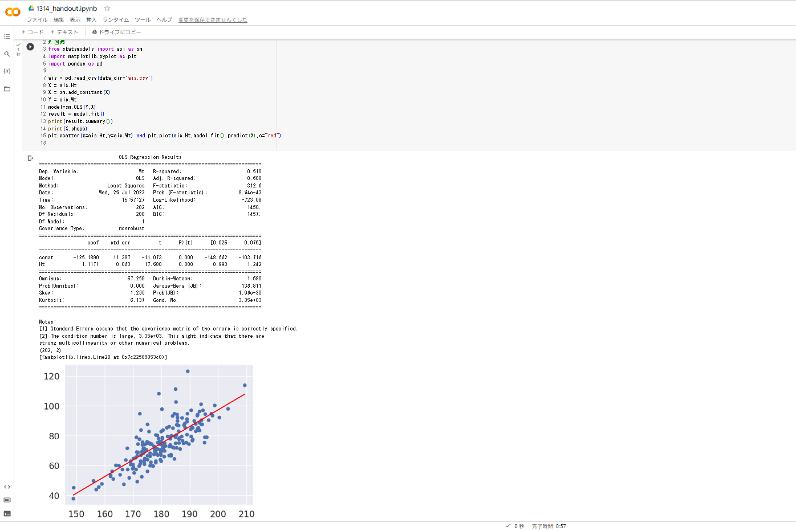
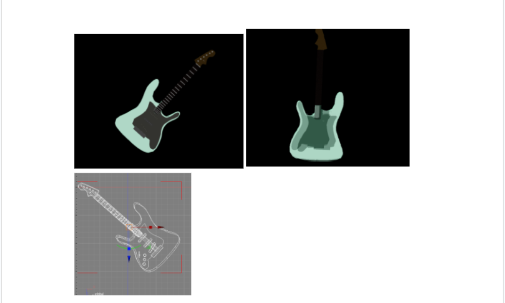
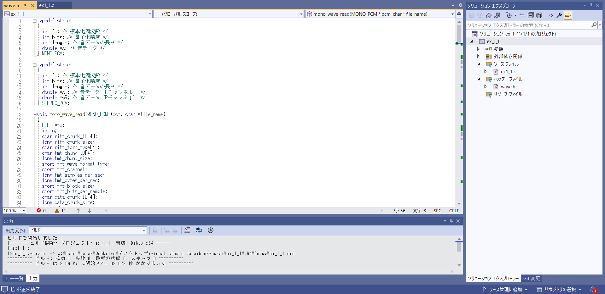
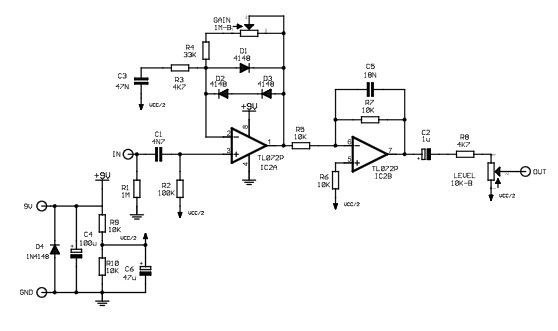
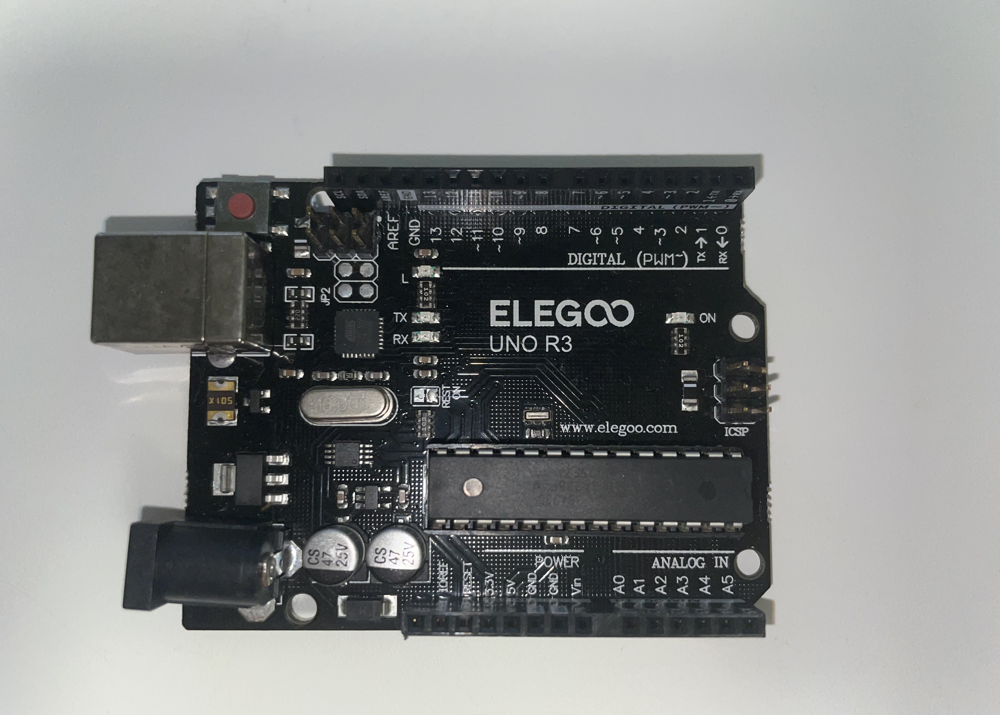

大学では情報技術と情報デザインの２つを学んでいます。
情報技術分野ではコンピュータやネットワーク、ソフトウェア、Web技術、データサイエンスについて学んでいます。
また情報デザイン分野では、ヒューマンインターフェースや3DCG、デジタルコンテンツの作成など幅広く学んでいます。


多変量解析

Pythonを使ってクラスタリング、主成分分析、回帰分析などのデータ分析を学びました。
コンピュータグラフィックス

エレキギター(ストラトキャスター)を3DCGを使って作りました。
サウンドプログラミング

私が所属する藤沢ゼミの藤沢先生と2人でC言語を用いた音のプログラミングを学ぶ勉強会を行っています。
自作のVSTプラグインの作成を目標に学習しています。
独学
電子工作

電子回路の設計・解析を学び、ギターエフェクターの自作に挑戦しています。
組込みシステム
Arduinoを使った組込みシステムを学んでいます。
TOEIC
TOEIC730点を目標に勉強を進めています。